عظم الفخذNormal Anatomy of the Femur, Radiological Features of Femur Bone & Ossification Centers
نظري · م02 · 8.0 دقيقةأقسام المحاضرة (9)
- عظم الفخذThe Femur
- الجزء القريب من عظم الفخذProximal Femur
- جسم عظم الفخذThe Shaft
- الجزء البعيد من عظم الفخذDistal Femur
- المظاهر الشعاعية لعظم الفخذRadiological Features of Femur Bone
- تعظّم عظم الفخذOssification of the Femur
- أنواع كسور الوركTypes of Femoral Fractures: Hip Fractures
- أنواع كسور جسم عظم الفخذFemoral Shaft Fractures
- أنواع كسور الجزء البعيد من عظم الفخذDistal Femoral Fractures
عظم الفخذThe Femur
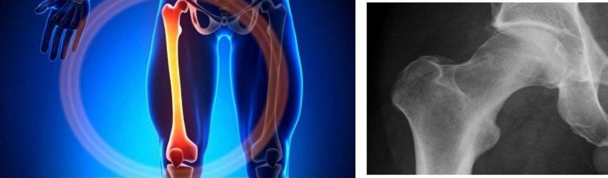
The femur is the only bone in the thigh and the longest bone in the body.
عظم الفخذ هو العظم الوحيد في الفخذ، وأطول عظم في الجسم.
It acts as the site of origin and attachment of many muscles and ligaments, and can be divided into three parts; proximal, shaft and distal.
وهو مكان منشأ وارتكاز كثير من العضلات والأربطة، ويمكن تقسيمه إلى ثلاثة أجزاء: القريب (الداني)، والجسم، والبعيد (القاصي).
الجزء القريب من عظم الفخذProximal Femur
الجزء القريبProximal
The proximal aspect of the femur articulates with the acetabulum of the pelvis to form the hip joint.
يتمفصل الجزء القريب من عظم الفخذ مع الحُقّ في الحوض ليكوّن مفصل الورك.
It consists of a head and neck, and two bony processes – the greater and lesser trochanters. There are also two bony ridges connecting the two trochanters; the intertrochanteric line anteriorly and the trochanteric crest posteriorly.
ويتكوّن من رأس وعنق، وناتئين عظميين هما المدوّر الكبير والمدوّر الصغير. ويوجد أيضاً حرفان عظميان يصلان بين المدوّرين: الخط بين المدوّرين من الأمام، والعرف بين المدوّرين من الخلف.
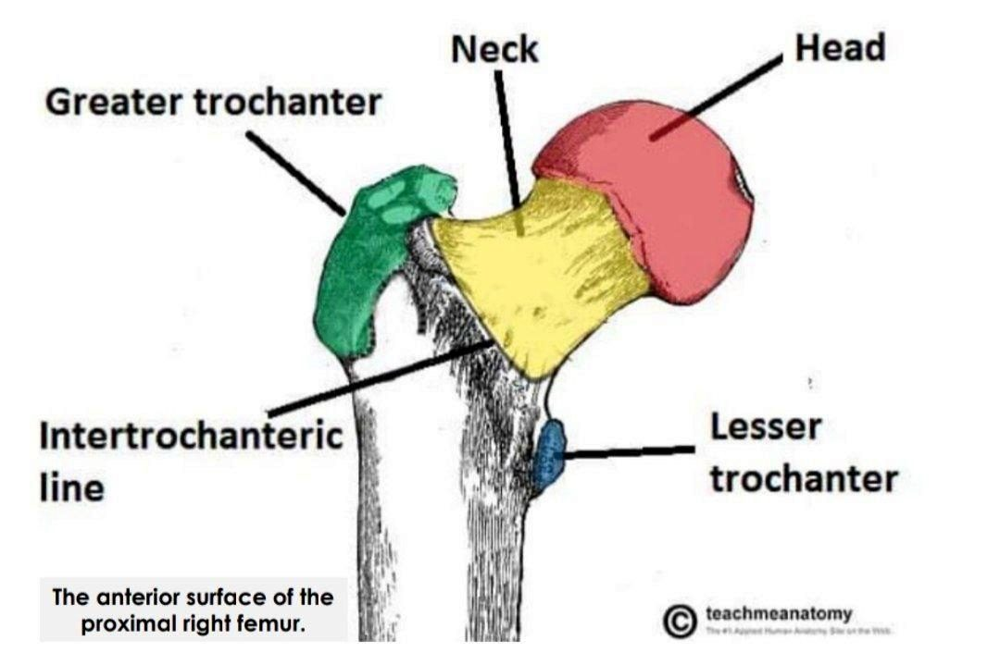
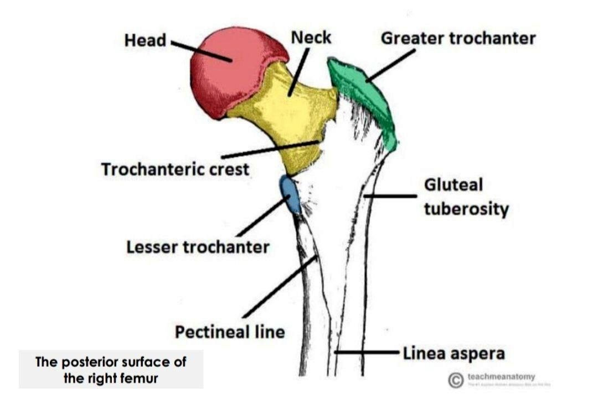
جسم عظم الفخذThe Shaft
- • The shaft of the femur descends in a slight medial direction. This brings the knees closer to the body’s centre of gravity, increasing stability. A cross section of the shaft in the middle is circular but flattened posteriorly at the proximal and distal aspects.ينزل جسم عظم الفخذ مائلاً قليلاً نحو الإنسي، وهذا يقرّب الركبتين من مركز ثقل الجسم فيزيد الثبات. والمقطع العرضي للجسم في منتصفه دائري، لكنه مسطّح من الخلف عند الطرفين القريب والبعيد.
- • On the posterior surface of the femoral shaft, there are roughened ridges of bone, called the linea aspera (Latin for rough line). This splits distally to form the medial and lateral supracondylar lines. The flat popliteal surface lies between themعلى السطح الخلفي لجسم عظم الفخذ حروف عظمية خشنة تُسمّى الخط الخشن (وتعني باللاتينية «الخط الخشن»). وينقسم في الأسفل ليكوّن الخطّين فوق اللقمتين الإنسي والوحشي، ويقع بينهما السطح المأبضي المسطّح.
- • Proximally, the medial border of the linea aspera becomes the pectineal line. The lateral border becomes the gluteal tuberosity, where the gluteus maximus attaches.في الأعلى: تصبح الحافة الإنسية للخط الخشن الخطَّ المشطي، وتصبح الحافة الوحشية الحدبةَ الألوية، التي ترتكز عليها العضلة الألوية الكبرى.
- • Distally, the linea aspera widens and forms the floor of the popliteal fossa, the medial and lateral borders form the medial and lateral supracondylar lines. The medial supracondylar line ends at the adductor tubercle, where the adductor magnus attaches.في الأسفل: يتّسع الخط الخشن ويكوّن أرضية الحفرة المأبضية، وتكوّن حافتاه الإنسية والوحشية الخطّين فوق اللقمتين الإنسي والوحشي. وينتهي الخط فوق اللقمة الإنسي عند الحديبة المقرِّبة، التي ترتكز عليها العضلة المقرِّبة الكبرى.
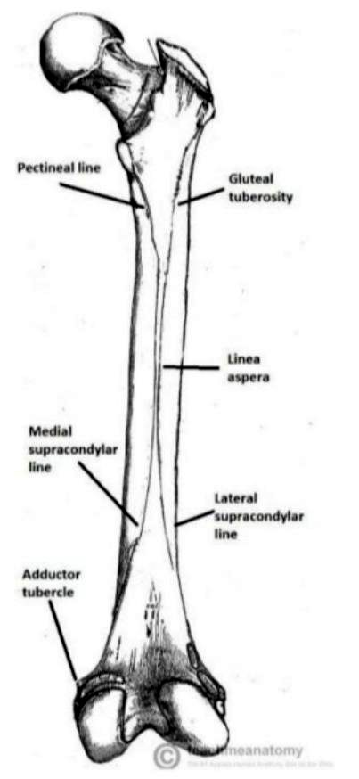
الجزء البعيد من عظم الفخذDistal Femur
الجزء البعيدDistal
The distal end of the femur is characterised by the presence of the medial and lateral condyles, which articulate with the tibia and patella to form the knee joint.
يتميّز الطرف البعيد لعظم الفخذ بوجود اللقمتين الإنسية والوحشية، اللتين تتمفصلان مع الظنبوب والرضفة لتكوين مفصل الركبة.
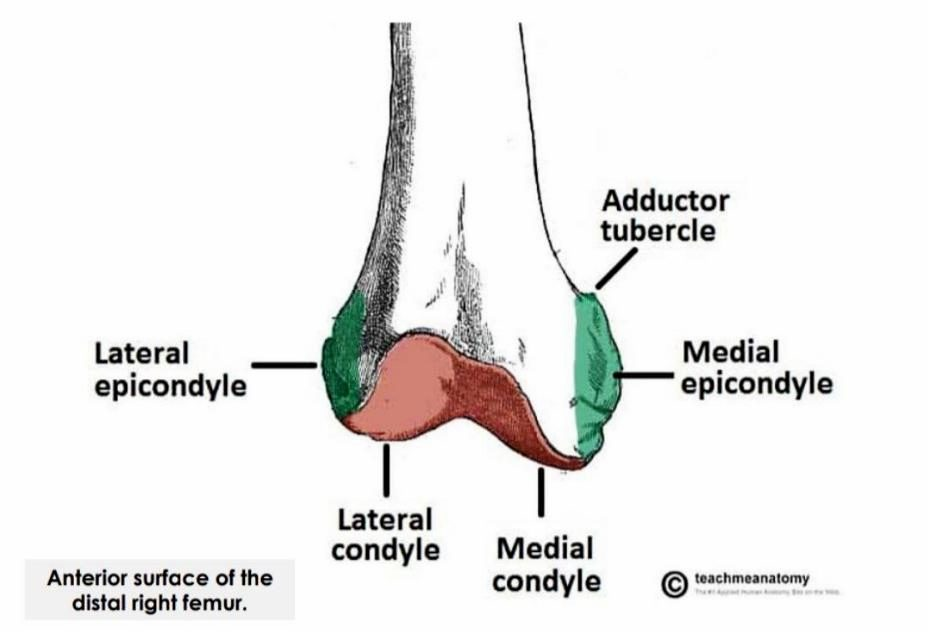
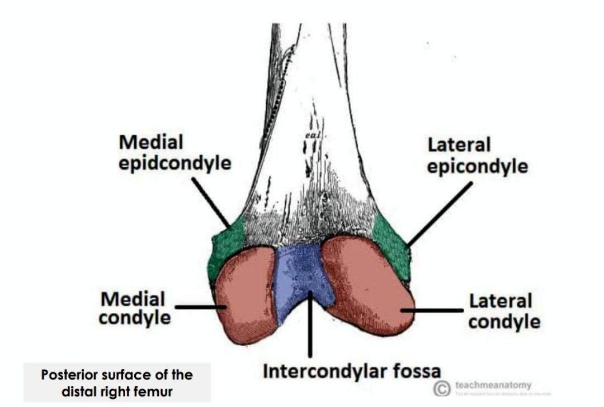
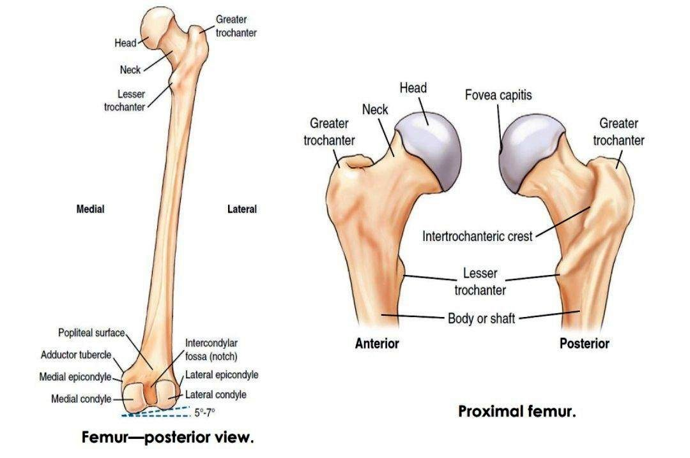
المظاهر الشعاعية لعظم الفخذRadiological Features of Femur Bone
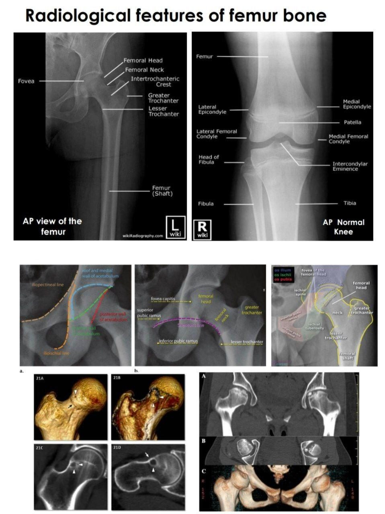
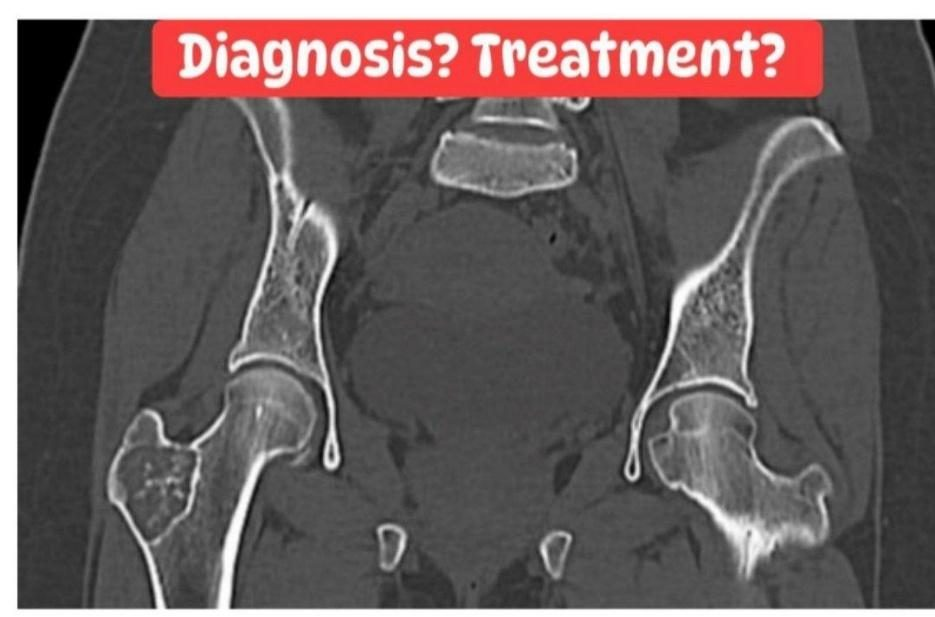
A 19 year-old male presents with chronic right hip discomfort. CT shows a well-defined, radiolucent lesion in the proximal femur.
شاب عمره 19 سنة يشكو من ألم مزمن في الورك الأيمن. يُظهر المفراس CT آفة واضحة الحدود، شفافة للأشعة، في الجزء القريب من عظم الفخذ.
Enchondroma is a benign cartilaginous tumor originating from the medullary cavity of long bones
الورم الغضروفي الداخلي ورم غضروفي حميد ينشأ من التجويف النقوي للعظام الطويلة.
تعظّم عظم الفخذOssification of the Femur
Femur ossification starts with a primary center in the shaft around the 7th week of gestation and continues with secondary centers in the head (first year), greater trochanter (3-5 years), lesser trochanter (12-15 years), and lower end (birth), all of which fuse with the main shaft to complete the bone between ages 14-18 for the proximal end and around age 20 for the distal end. This entire process, called endochondral ossification, uses a cartilage foundation to form the femur.
يبدأ تعظّم عظم الفخذ بمركز أوّلي في الجسم نحو الأسبوع السابع من الحمل، ثم مراكز ثانوية في: الرأس (السنة الأولى)، والمدوّر الكبير (3–5 سنوات)، والمدوّر الصغير (12–15 سنة)، والطرف السفلي (عند الولادة). وكلها تلتحم بالجسم الرئيسي ليكتمل العظم: بين 14–18 سنة للطرف القريب، ونحو 20 سنة للطرف البعيد. وهذه العملية كلها تُسمّى التعظّم داخل الغضروف، وفيها يُبنى عظم الفخذ على أساس غضروفي.
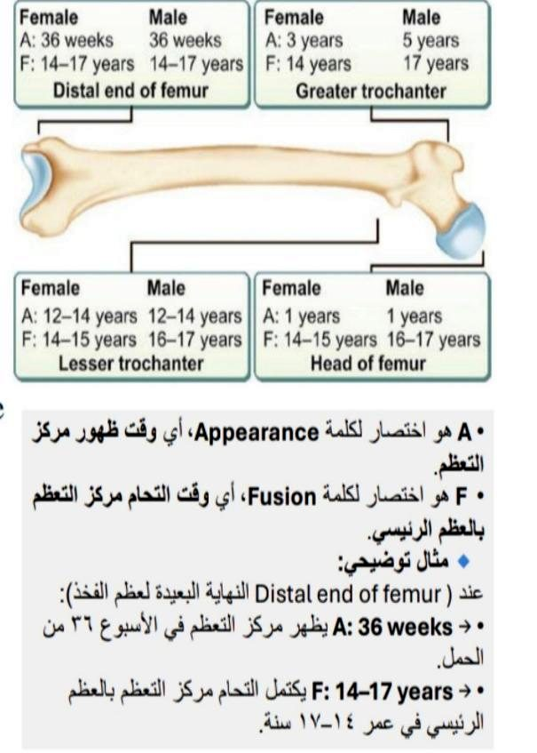
عظم الفخذ عند الأطفالPediatric femur
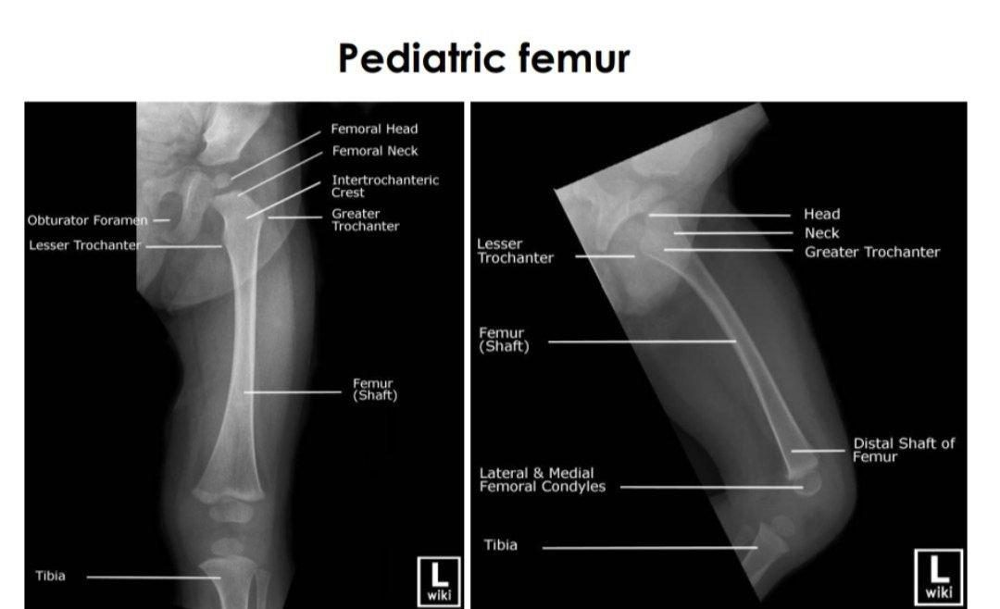
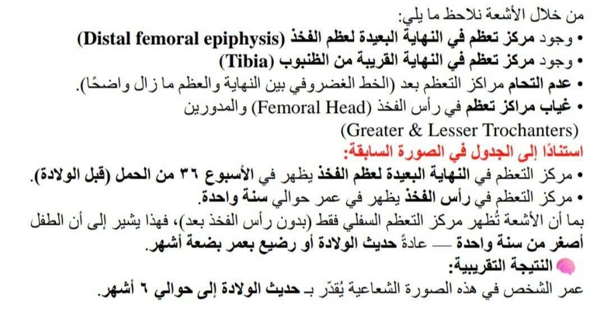
أنواع كسور الوركTypes of Femoral Fractures: Hip Fractures
أنواع كسور عظم الفخذtypes of femoral fractures
1- الأنواع الرئيسية لكسور الورك1- The main types of hip fractures
femoral neck fracture (subcapital ,transcervical fractures intertrochanteric fracture, and subtrochanteric fracture) Types of femoral fractures
كسر عنق عظم الفخذ (كسر تحت الرأس، وكسر عبر العنق)، والكسر بين المدوّرين، والكسر تحت المدوّرين — أنواع كسور عظم الفخذ.
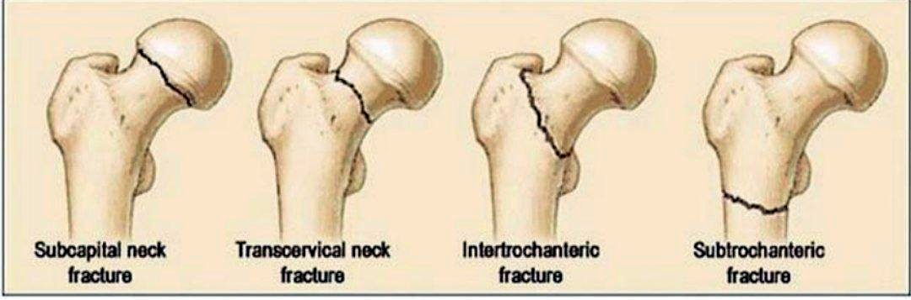
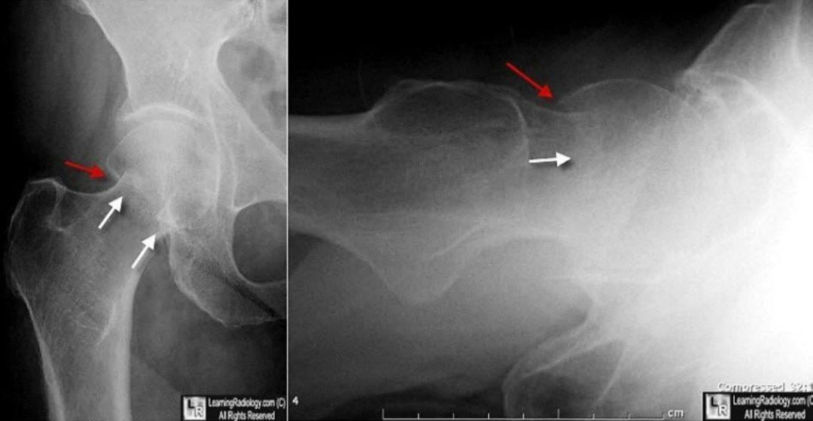
Sub-capital hip fracture. On the frontal view, there is a step-off in the cortex superiorly (red arrow) while there is abnormal overlapping of the femoral head and neck (white arrows) due to impaction. On the lateral view, the same step-off can be seen (red arrow) as well as the impaction (white arrow).
كسر الورك تحت الرأس. في المنظر الأمامي يوجد انقطاع متدرّج في القشرة من الأعلى (السهم الأحمر)، مع تراكب غير طبيعي لرأس الفخذ وعنقه (الأسهم البيضاء) بسبب الانحشار. وفي المنظر الجانبي يظهر الانقطاع نفسه (السهم الأحمر) وكذلك الانحشار (السهم الأبيض).
أنواع كسور جسم عظم الفخذFemoral Shaft Fractures
2- الأنواع الرئيسية لكسور جسم عظم الفخذ2- The main types of femoral shaft -fractures
Open fractures often involve much more damage to the surrounding muscles, tendons, and ligaments. They have a higher risk for complications—especially infections—and take a longer time to heal
الكسور المفتوحة غالباً ما يرافقها ضرر أكبر بكثير في العضلات والأوتار والأربطة المحيطة. وخطر المضاعفات فيها أعلى، خصوصاً العدوى (الالتهابات)، وتحتاج وقتاً أطول للشفاء.
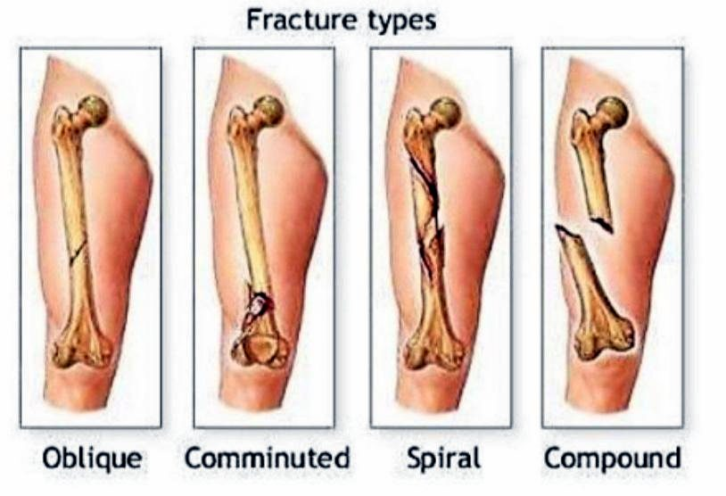
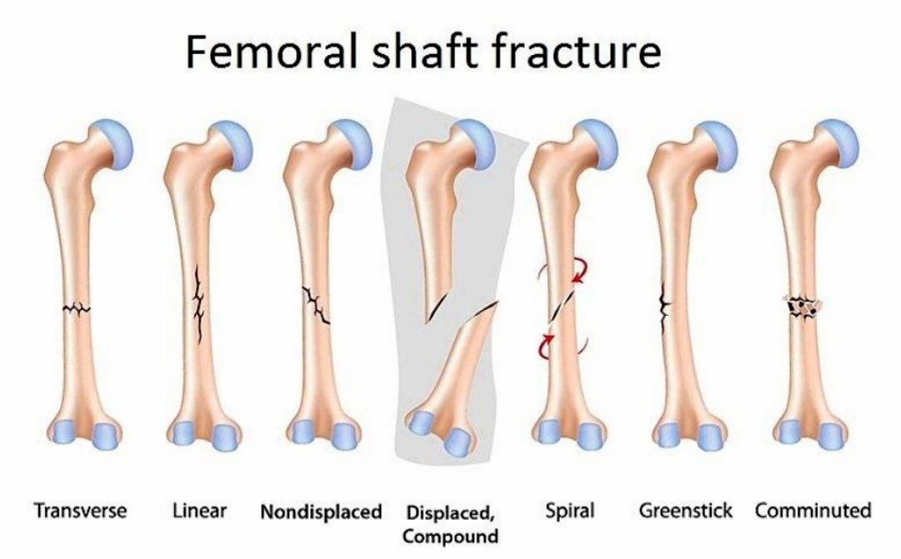
- • A : simple transverse fracture with minimal comminutionA: كسر مستعرض بسيط مع تفتّت طفيف
- • B: simple oblique- transverse fracture without comminutionB: كسر مائل مستعرض بسيط بلا تفتّت
- • C: simple oblique fractureC: كسر مائل بسيط
- • D: A slightly comminuted fractureD: كسر مفتّت قليلاً
- • E: spiral fracture with a bending wedge (butterfly fragment)E: كسر حلزوني مع إسفين انثناء (قطعة الفراشة)
- • F: comminuted irregular complex fractureF: كسر مفتّت معقّد غير منتظم
- • G: segmental fractureG: كسر قِطعي
- • H: An oblique fracture of the middle third of the femoral with minimal comminution and a dislocation of the kneeH: كسر مائل في الثلث الأوسط من عظم الفخذ مع تفتّت طفيف وخلع في الركبة
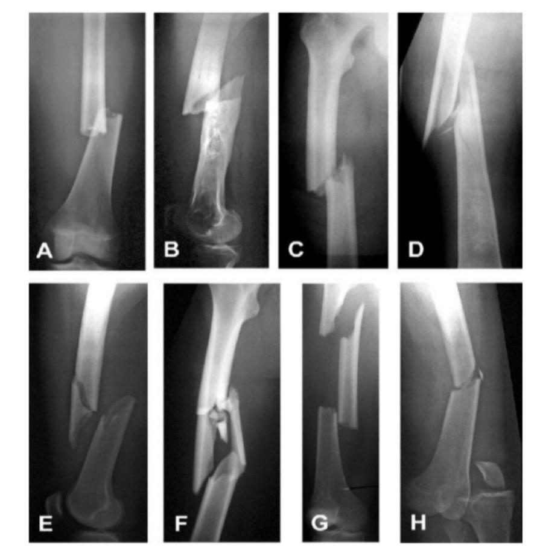
أنواع كسور الجزء البعيد من عظم الفخذDistal Femoral Fractures
3- الأنواع الرئيسية لكسور الجزء البعيد من عظم الفخذ3-The main types of femoral distal fractures
النوع A: خارج المفصلType A: Extra-articular
- • A1 Simple or two- part:A1: بسيط أو من جزأين
- • A2 Metaphyseal butterflyA2: شظية فراشة في الكردوس
- • A3 Metaphysis is comminutedA3: الكردوس مفتّت
النوع B: مفصلي جزئيType B: Partial articular:
- • B1 Sagittal (احتمال خطأ: الأصح: B1 للقمة الوحشية، وB2 للإنسية) plane fracture condyleB1: كسر اللقمة في المستوى السهمي
- • B2 Sagittal plane fracture condyleB2: كسر اللقمة في المستوى السهمي
- • B3 Any frontal or coronal condyle (Hoffa type)B3: أي كسر للقمة في المستوى الجبهي أو الإكليلي (نوع هوفا)
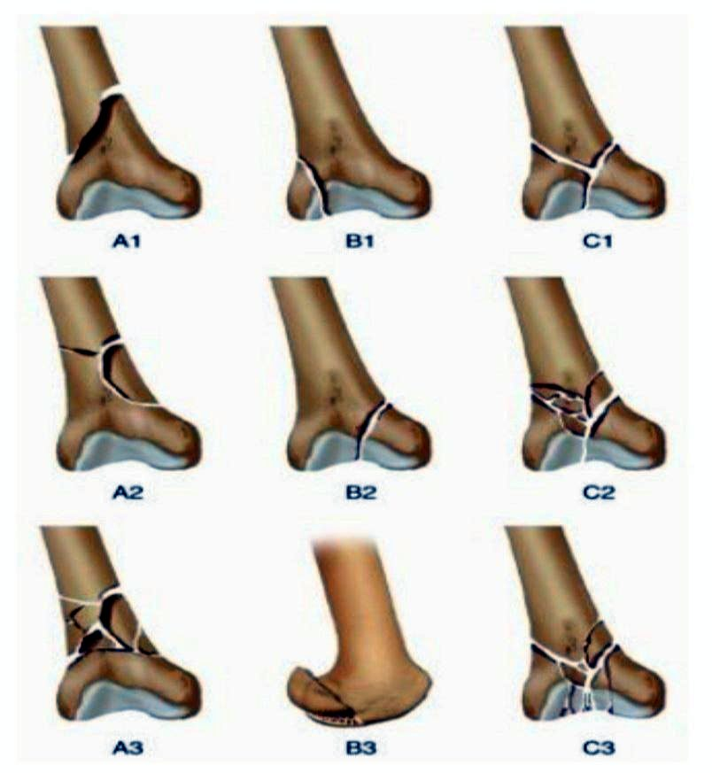
النوع C: داخل المفصلType C: Intra-articular
- • C1 Simple articular split or Y fracture configurationC1: انشقاق مفصلي بسيط، أو كسر بشكل حرف Y
- • C2 Simple articular split metaphyseal injuryC2: انشقاق مفصلي بسيط مع إصابة الكردوس
- • C3 Comminuted articular metaphyseal injuryC3: إصابة مفصلية مفتّتة مع إصابة الكردوس
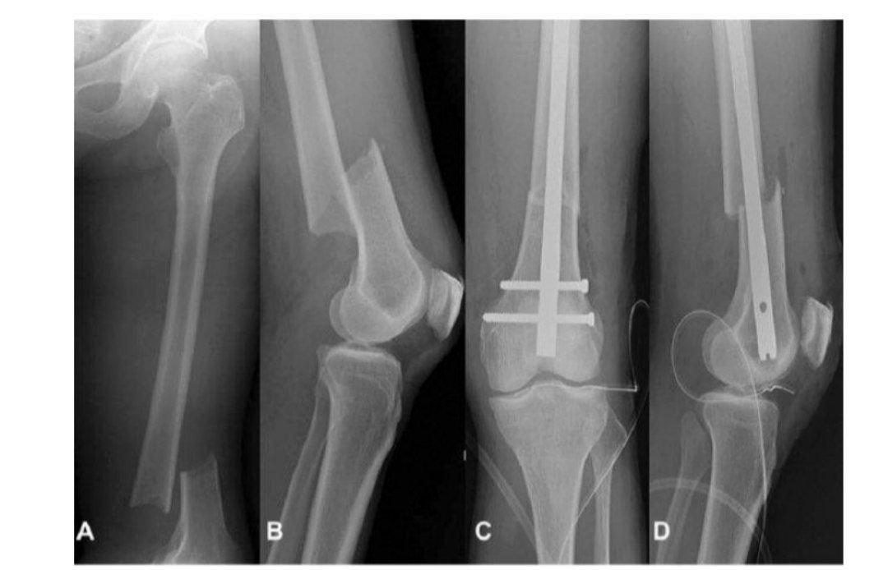
(A) and (B) Radiographs of the fractured distal femur showing a severely angulated and posteriorly translated transverse fracture noted before operation; (C) and (D) after closed reduction and retrograde intramedullary nail fixation, the fracture was restored with suboptimal alignment for residual translation, but no abnormal soft tissue mass was observed at this time.
(أ) و(ب): صور شعاعية لكسر في الجزء البعيد من عظم الفخذ، تُظهر كسراً مستعرضاً شديد التزوّي ومنزاحاً نحو الخلف قبل العملية؛ (ج) و(د): بعد الردّ المغلق والتثبيت بمسمار نقوي راجع عادت القطع مع اصطفاف غير مثالي بسبب انزياح متبقٍّ، ولم تُلاحظ كتلة غير طبيعية في الأنسجة الرخوة في ذلك الوقت.
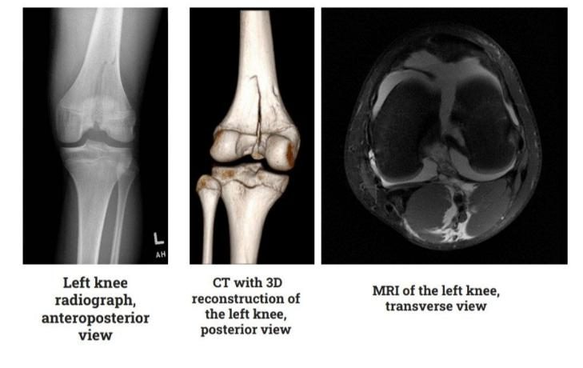
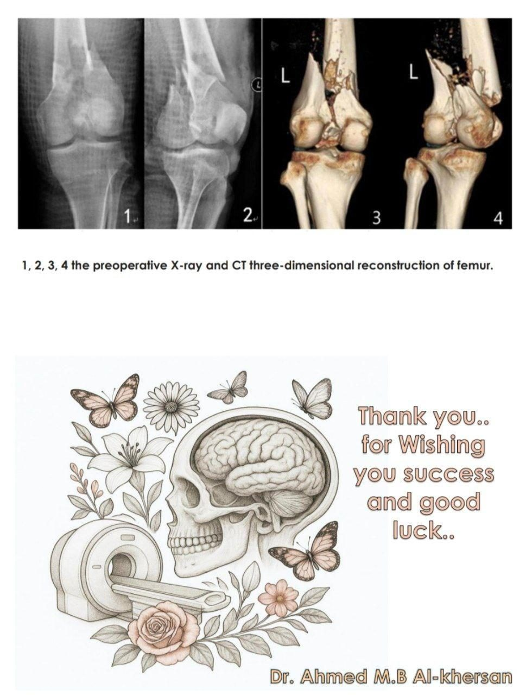
المحاضرة مسموعة
نص الأستاذ بالإنكليزي مثل الأصل · 8.0 دقيقة. اضغط أي جملة تسمعها، أو مصطلح منقّط تسمع لفظه ومعناه.
The Femurعظم الفخذ
The Femur
The femur is the only bone in the thigh and the longest bone in the body.
It acts as the site of origin and attachment of many muscles and ligaments, and can be divided into three parts; proximal, shaft and distal.
Proximal Femurالجزء القريب من عظم الفخذ
Proximal Femur
Proximal
The proximal aspect of the femur articulates with the acetabulum of the pelvis to form the hip joint.
It consists of a head and neck, and two bony processes – the greater and lesser trochanters. There are also two bony ridges connecting the two trochanters; the intertrochanteric line anteriorly and the trochanteric crest posteriorly.
Head – articulates with the acetabulum of the pelvis to form the hip joint. It has a smooth surface, covered with articular cartilage (except for a small depression – the fovea – where ligamentum teres attaches).
Neck – connects the head of the femur with the shaft. It is cylindrical, projecting in a superior and medial direction. It is set at an angle of approximately 135 degrees to the shaft. This angle of projection allows for an increased range of movement at the hip joint.
Greater trochanter – the most lateral palpable projection of bone that originates from the anterior aspect, just lateral to the neck
Lesser trochanter – smaller than the greater trochanter. It projects from the posteromedial side of the femur, just inferior to the neck-shaft junction.
Intertrochanteric line – a ridge of bone that runs in an inferomedial direction on the anterior surface of the femur, spanning between the two trochanters. After it passes the lesser trochanter on the posterior surface, it is known as the pectineal line.
Intertrochanteric crest – like the intertrochanteric line, this is a ridge of bone that connects the two trochanters. It is located on the posterior surface of the femur. There is a rounded tubercle on its superior half called the quadrate tubercle; where quadratus femoris attaches.
The Shaftجسم عظم الفخذ
The Shaft
The shaft of the femur descends in a slight medial direction. This brings the knees closer to the body’s centre of gravity, increasing stability. A cross section of the shaft in the middle is circular but flattened posteriorly at the proximal and distal aspects.
On the posterior surface of the femoral shaft, there are roughened ridges of bone, called the linea aspera (Latin for rough line). This splits distally to form the medial and lateral supracondylar lines. The flat popliteal surface lies between them
Proximally, the medial border of the linea aspera becomes the pectineal line. The lateral border becomes the gluteal tuberosity, where the gluteus maximus attaches.
Distally, the linea aspera widens and forms the floor of the popliteal fossa, the medial and lateral borders form the medial and lateral supracondylar lines. The medial supracondylar line ends at the adductor tubercle, where the adductor magnus attaches.
Distal Femurالجزء البعيد من عظم الفخذ
Distal Femur
Distal
The distal end of the femur is characterised by the presence of the medial and lateral condyles, which articulate with the tibia and patella to form the knee joint.
Medial and lateral condyles – rounded areas at the end of the femur. The posterior and inferior surfaces articulate with the tibia and menisci of the knee, while the anterior surface articulates with the patella. The more prominent lateral condyle helps prevent the natural lateral movement of the patella; a flatter condyle is more likely to result in patellar dislocation.
Medial and lateral epicondyles – bony elevations on the non -articular areas of the condyles. The medial epicondyle is the larger.
Intercondylar fossa – a deep notch on the posterior surface of the femur ,between the two condyles. It contains two facets for attachment of intracapsular knee ligaments; the anterior cruciate ligament (ACL) attaches to the medial aspect of the lateral condyle and the posterior cruciate ligament (PCL) to the lateral aspect of the medial condyle.
Radiological Features of Femur Boneالمظاهر الشعاعية لعظم الفخذ
Radiological Features of Femur Bone
A 19 year-old male presents with chronic right hip discomfort. CT shows a well-defined, radiolucent lesion in the proximal femur.
Enchondroma is a benign cartilaginous tumor originating from the medullary cavity of long bones
Ossification of the Femurتعظّم عظم الفخذ
Ossification of the Femur
Femur ossification starts with a primary center in the shaft around the 7th week of gestation and continues with secondary centers in the head (first year), greater trochanter (3-5 years), lesser trochanter (12-15 years), and lower end (birth), all of which fuse with the main shaft to complete the bone between ages 14-18 for the proximal end and around age 20 for the distal end. This entire process, called endochondral ossification, uses a cartilage foundation to form the femur.
Pediatric femur
Types of Femoral Fractures: Hip Fracturesأنواع كسور الورك
Types of Femoral Fractures: Hip Fractures
types of femoral fractures
1- The main types of hip fractures
femoral neck fracture (subcapital ,transcervical fractures intertrochanteric fracture, and subtrochanteric fracture) Types of femoral fractures
Sub-capital hip fracture. On the frontal view, there is a step-off in the cortex superiorly (red arrow) while there is abnormal overlapping of the femoral head and neck (white arrows) due to impaction. On the lateral view, the same step-off can be seen (red arrow) as well as the impaction (white arrow).
Femoral Shaft Fracturesأنواع كسور جسم عظم الفخذ
Femoral Shaft Fractures
2- The main types of femoral shaft -fractures
Open fractures often involve much more damage to the surrounding muscles, tendons, and ligaments. They have a higher risk for complications—especially infections—and take a longer time to heal
A : simple transverse fracture with minimal comminution
B: simple oblique- transverse fracture without comminution
C: simple oblique fracture
D: A slightly comminuted fracture
E: spiral fracture with a bending wedge (butterfly fragment)
F: comminuted irregular complex fracture
G: segmental fracture
H: An oblique fracture of the middle third of the femoral with minimal comminution and a dislocation of the knee
Distal Femoral Fracturesأنواع كسور الجزء البعيد من عظم الفخذ
Distal Femoral Fractures
3-The main types of femoral distal fractures
Type A: Extra-articular
A1 Simple or two- part:
A2 Metaphyseal butterfly
A3 Metaphysis is comminuted
Type B: Partial articular:
B1 Sagittal (احتمال خطأ: الأصح: B1 للقمة الوحشية، وB2 للإنسية) plane fracture condyle
B2 Sagittal plane fracture condyle
B3 Any frontal or coronal condyle (Hoffa type)
Type C: Intra-articular
C1 Simple articular split or Y fracture configuration
C2 Simple articular split metaphyseal injury
C3 Comminuted articular metaphyseal injury
(A) and (B) Radiographs of the fractured distal femur showing a severely angulated and posteriorly translated transverse fracture noted before operation; (C) and (D) after closed reduction and retrograde intramedullary nail fixation, the fracture was restored with suboptimal alignment for residual translation, but no abnormal soft tissue mass was observed at this time.
44 سؤال من نص المحاضرة، ويّا «ليش صح» بعد كل جواب.
ابدأ الاختباراضغط أي مصطلح منقّط تسمع لفظه ومعناه.
PDF ثنائي اللغة: نص الأستاذ + الترجمة + الخلاصة + الأسئلة · 2.2 MB
تحميل الملف